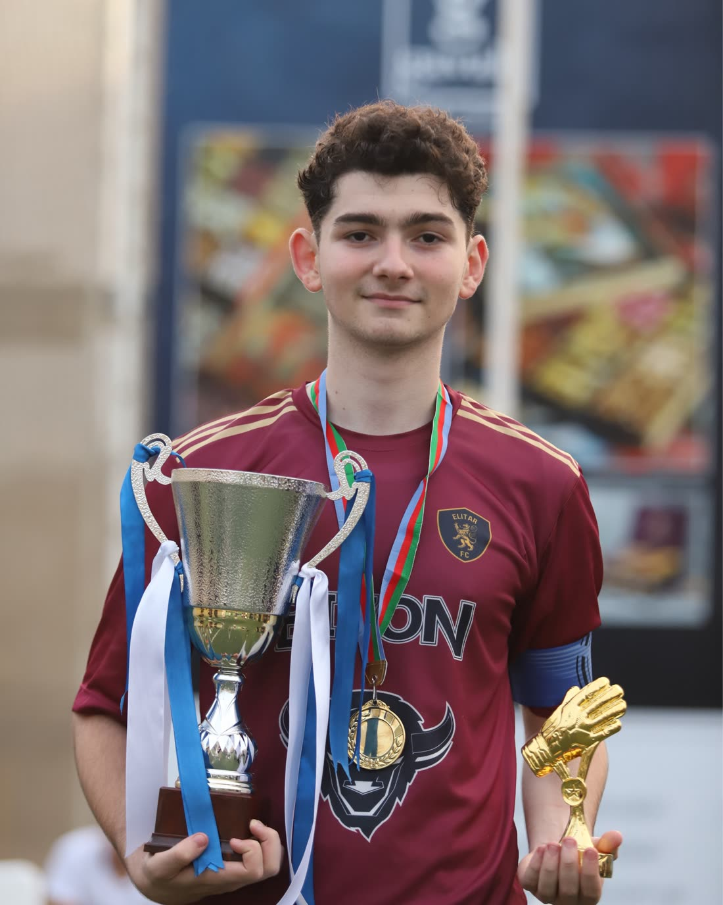
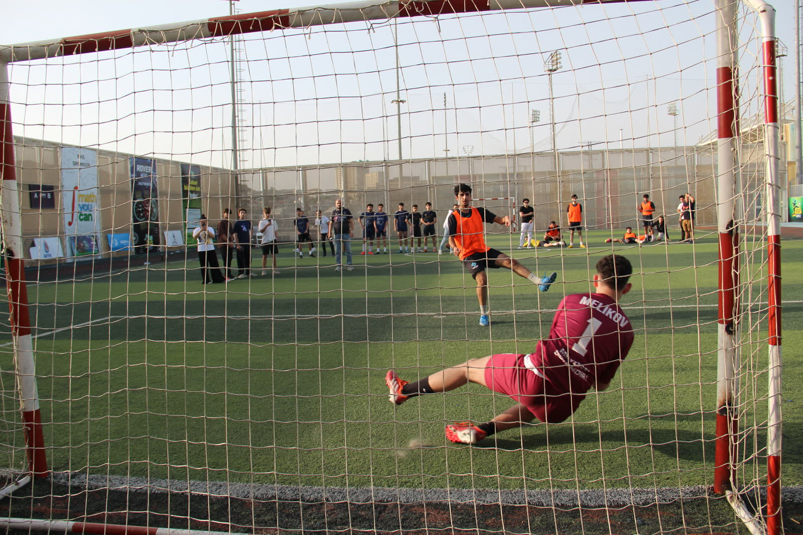
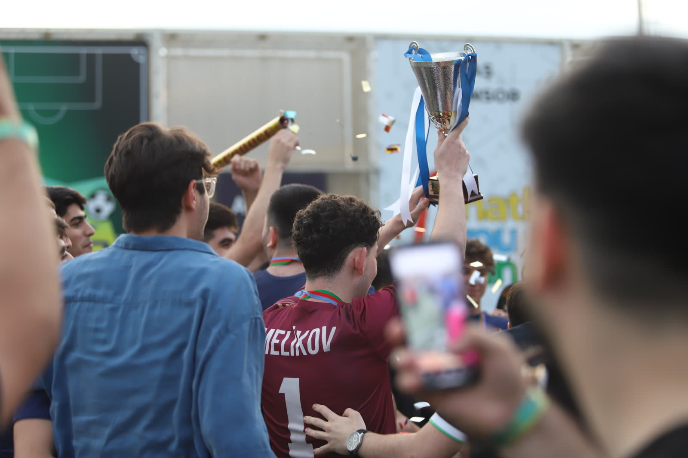

Work
IT System Administrator
Media Consulta International, Berlin, since March 2026. Networks, devices, and the people who use them. Part-time, alongside the degree.
IT system administrator in Berlin. Software engineer in the making.
That is the job. I like the job.
One year in Germany. A part-time sysadmin job and a master's in Software Engineering, running side by side.
Teyyub Malikov. IT system administrator in Berlin, M.Sc. Software Engineering student.
Get in touchRight now
Work
Media Consulta International, Berlin, since March 2026. Networks, devices, and the people who use them. Part-time, alongside the degree.
Study
University of Europe for Applied Sciences, Potsdam. Graduating July 2027. Software architecture, distributed systems, cloud, secure development.
Languages
Azerbaijani, Russian, English, Turkish, and German in progress.
The path
Baku
B.Sc. Computer Science at Azerbaijan State University of Economics, graduated July 2025. Harvard's CS50 and a full-stack course at Step IT Academy along the way.
2022 to 2024
Support staff at ADEX and Baku Build, guest services at the Hilton, the Ritz-Carlton and Heydar Aliyev International Airport. Where I learned that things have to work while thousands of people are watching.
2025
Technical support for exhibitions with 10,000+ participants. 100+ LAN and WAN devices configured and kept at 98% uptime. 20+ colleagues trained. A database internship at SINAM in the same year.
September 2025
New language, new city, same uptime.
Now
By day. The master's in Software Engineering alongside, graduating 2027.
Health check
Press and hold. Every check is something I do for real.
Waiting.
Selected work
How I combined CNNs, ensemble learning and rule-based checks to spot cancer in histopathology slides, with calibrated probabilities and an abstain rule for when the model is unsure. Tested on outside lung and colon data.
View the codeHow I built a decision support system for credit, insurance and fraud risk with models you can explain, so non-technical people get risk scores, tiers and alerts they can act on.
View the codeHow I built a vulnerable PHP app and its hardened twin, with prepared statements, input validation, bcrypt and session security, then attacked both with SQLMap to prove the difference.
View the codeOff duty



The moment
BIZON Student Cup II, Baku. First place, and eight seconds of noise after a season of quiet work. Press play, it does not start on its own.
Contact
Hiring, a project, or just coffee in Berlin. One email is enough.
The email button opens your own mail app with my address filled in. No forms, no tracking.